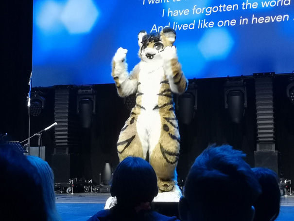

The norwegian law defines art as:
-
Lovdata, 26.03.2024
*Difference in translation may occur
But is that the framework of what art is? Most people like to associate art with the traditional art forms such as drawing, painting and sculpture. In modern times, however, art has rapidly changed form, thematic content and social functioning. But artwork is not just physical. Music can too for a part be an art form: sound organized in time to create enriching experiences through listening, dancing or performing. Philosophers and art historians have tried to create a common definition, but attempt to defining art has not corresponded to everything that is considered art.
The furry community is a subculture that is characterized by a passion for anthropomorphic animal figures, which the participants often create and identify themselves with so-called "fursonas" – imaginative animal personalities that represent their own character traits and interests. These characters can be anything from classic animals such as wolves and foxes to more imaginative ones creatures like dragons and unicorns. The furry community has one range of activities and interests, including art, literature, costume design and social gatherings such as conventions and online forums. For Many participants are furry not just a hobby, but an important part of their identity and social life. Despite some misunderstandings and stereotypes related to the environment, there is a large environment that values creativity, self-expression and community.
The furry community has a lot of what we consider art, where it is intertwined, with people who explore their passion for anthropomorphic animals through a wide spectrum of creative forms of expression. Painting and drawing are among the most popular the art forms within saub culture, and they are often used to create vivid and imaginative images of fursonas and other animal figures. The artists in this community explore different styles, from realistic portraits to more stylized and abstract works, and each artist puts his unique twist on his creations. In addition to traditional painting and drawing techniques, digital plays a role media an increasingly dominant role in the furry art world. Digital illustrations and manipulations allow greater flexibility and the ability to create intricate and detailed images that explore the boundaries between fantasy and reality. Images also play an important role within the furry community, and that is common for members to share their artwork through social media, websites and online galleries. These images provide not only a visual feast for the eyes, but also serves as a means of sharing and celebrating the community's creative talents and diversity.
Fursuits represent a unique form of furry art where you create your own costumes from your fursonas or others animal figures. These costumes, which often include a head, tail, and fur suits, allow users to play their characters on public events such as conventions or parades. Each fursuit is a unique handmade masterpiece, created with care and dedication to reproduce the character's appearance and personality in a vivid way. Overall, painting, drawing, pictures and fursuits provide the furry community a rich and varied visual culture that celebrates imagination and creativity to its members in a unique and colorful way.
Background art made by Ango